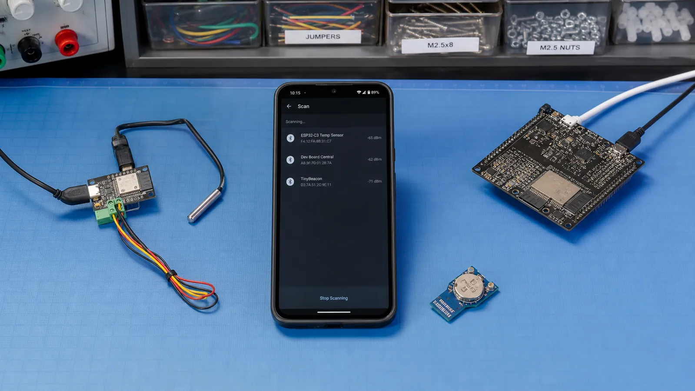

واژههای Central و Peripheral درباره نقش ارتباط هستند، نه قدرت سختافزار. گوشی معمولاً Central و سنسور Peripheral است، اما همان ESP32 میتواند در پروژهای دیگر نقش Central بگیرد. با شناخت نقشها، مسیر API و مسئولیت هر طرف روشن میشود.
Peripheral معمولاً Advertising میکند و داده یا سرویس را ارائه میدهد. Central اسکن میکند، دستگاه مناسب را پیدا میکند و اتصال را آغاز میکند. پس از اتصال، نقش Link Layer با نقش GATT Client و Server یکی نیست؛ غالباً Central کلاینت است اما این الزام مطلق نیست.
Broadcaster داده را بدون نیاز به اتصال پخش میکند؛ Beacon نمونه رایج آن است. Observer فقط Advertising را دریافت و تحلیل میکند و لزوماً اتصال نمیسازد. این دو نقش برای تلهمتری ساده، حضورسنجی و اسکن محیط کمهزینهاند.
در یک دماسنج، سنسور Advertising میکند، گوشی آن را اسکن و متصل میشود، سپس سرویسها را کشف میکند. اگر گوشی Notify را فعال کند، سنسور با تغییر دما مقدار جدید میفرستد. مسئول شروع اتصال گوشی است ولی داده کاربردی را سنسور تولید میکند.
یک ESP32-C3 میتواند Peripheral باشد و داده SHT31 را ارائه کند؛ ESP32 دوم Central باشد و آن را روی نمایشگر نشان دهد. برخی تراشهها چند اتصال یا چند نقش همزمان را پشتیبانی میکنند، اما RAM، زمان رادیو و پیچیدگی مدیریت وضعیت افزایش مییابد.
برای سه سناریوی «Beacon فروشگاه»، «قفل هوشمند با موبایل» و «Gateway که ده سنسور را میخواند» نقش هر دستگاه را بنویسید. سپس جداگانه مشخص کنید کدام طرف GATT Server و کدام طرف GATT Client است.